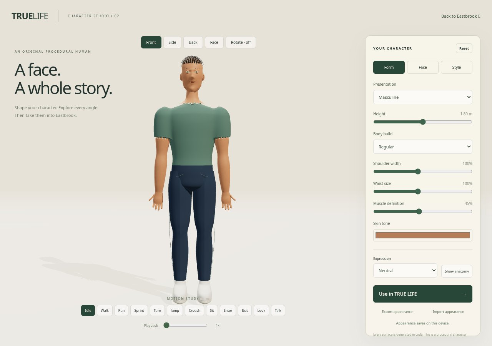
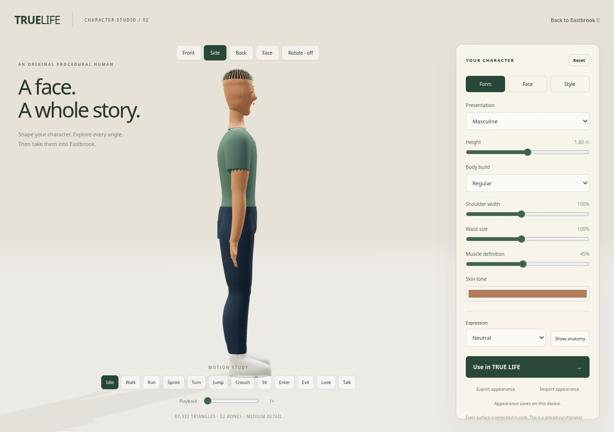
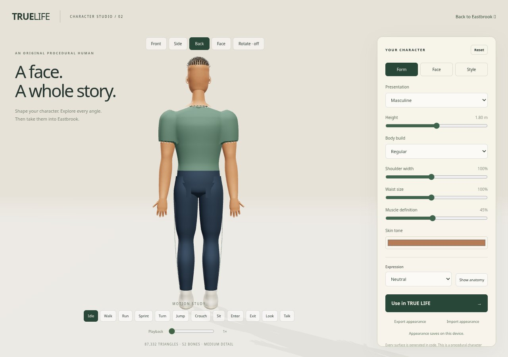
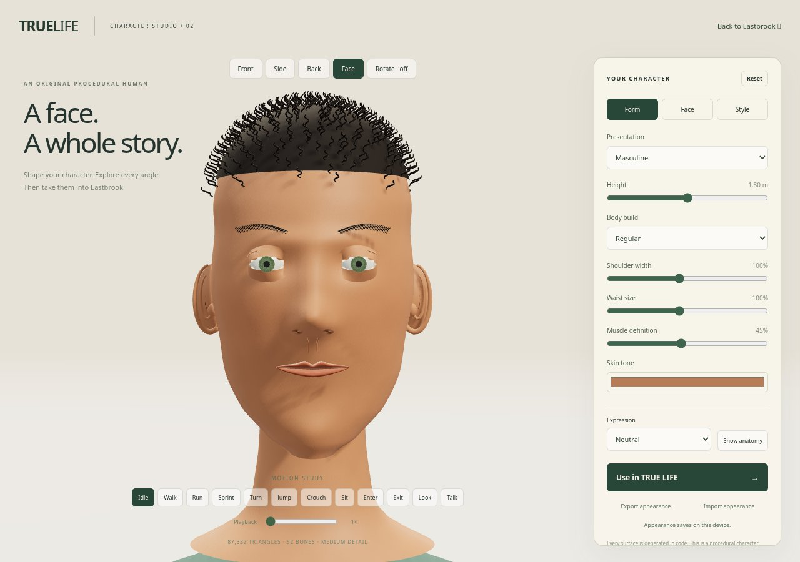

Actual browser captures of the code-generated character. Open the interactive studio to rotate, customize, and preview movement. The character is a procedural study with further realism and deformation work remaining.



